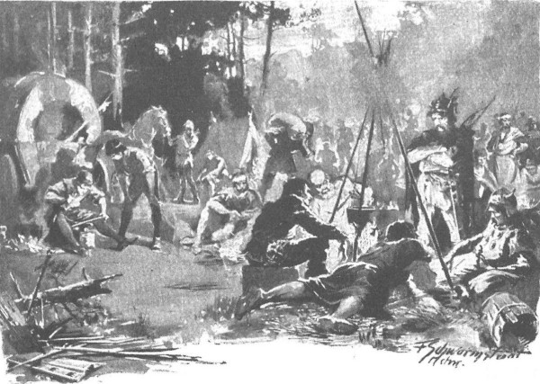

Đối với ông Maćko và Zbyszko, những người trước đây đã từng phục vụ dưới trướng đại quận công Witold, đã quen với cảnh quân ngũ Litva và các chiến binh Żmudź, cảnh lửa trại không có gì mới; nhưng riêng chàng Séc thì vừa ngắm họ với vẻ tò mò, vừa cân nhắc trong lòng liệu có thể mong đợi gì ở những đám người này khi vào trận chiến, và thầm so sánh họ với giới hiệp sĩ của Ba Lan cùng các hiệp sĩ Đức. Trại được dựng trên vùng đất thấp, bao quanh bởi các khu rừng và đầm lầy, an ổn hoàn toàn khỏi những cuộc tấn công, bởi lẽ không đội quân nào khác có thể vượt qua những khu đầm lầy nguy hiểm này. Ngay cả khu đất thấp nơi dựng trại cũng là một vùng cây cối rậm rạp và sình lầy, nhưng họ đã chặt những cành linh sam và cành thông rồi ném xuống đó rất dày, nên dường như được ngồi nghỉ tại chỗ khô ráo nhất. Người ta ra lệnh khẩn cấp làm cho quận công Skirwoiłło một cái numa, tức là lều kiểu Litva bằng đất và gỗ nguyên cây không đẽo gọt; vài chục chiếc lều tạm đan bằng cành lá dành cho những người khá giả hơn, còn các chiến binh thông thường thì ngồi quanh đống lửa trại dưới bầu trời, dùng những tấm áo choàng hay những miếng da thuộc để che tấm thân trần trụi, chống lại những thay đổi về thời tiết và làn mưa phùn. Trong trại, không một ai ngủ, bởi vì mọi người không có gì việc gì để làm nên đã ngủ suốt ngày. Một số đang ngồi hoặc nằm quanh những đống lửa cháy sáng được đốt bằng cây cỏ khô và những cành bách xù, những người khác đang cời bới trong những cái niêu bị vùi trong đống than củi đã cháy tàn và phủ đầy tro, từ đó tỏa mùi thơm của củ cải nướng - món ăn thông thường của người dân Litva - và mùi thịt cháy. Giữa các đống lửa, trông rõ những đống khí giới được đặt rất gần, để khi có sự biến mỗi người chỉ cần với tay là sẽ cầm ngay được vũ khí. Hlava tò mò ngắm nghía những bao tên hẹp và dài, đầu tên bọc sắt, những cây chùy làm bằng gỗ sồi non, có đóng nhiều đinh nhọn hay viên đá sắc, những chiếc rìu chiến có tay cầm ngắn, tương tự như rìu của dân thợ săn Ba Lan, mà các kỵ sĩ hay sử dụng, và những chiếc rìu chiến với tay cầm dài giống những cây rìu bổ mà lính bộ thường dùng. Cũng có các thứ khí giới bằng đồng từ những thời xa xưa, khi đồ sắt vẫn còn ít được sử dụng ở vùng xa xôi này. Một số thanh kiếm cũng được làm bằng đồng, nhưng hầu hết được rèn bằng thép tốt, được cung cấp từ thành Novogrod. Chàng trai Séc cầm lên tay những chiếc câu liêm, đao, kiếm, lưỡi dao sắc lẹm, những cánh cung nỏ được uốn cong qua lửa, và trong ánh sáng của đống lửa, chàng mê mải ngắm nghía sự hoàn hảo của chúng. Bên những đống lửa trại chỉ có mấy con ngựa, còn cả đàn đang được thả trong rừng và trên cánh đồng cỏ gần đấy, trong sự canh gác cẩn mật của các tay chăn ngựa; các hiệp sĩ phong lưu hơn của vùng này lại muốn có ngay đàn chiến mã của chính họ ngay khi cần, nên thường nuôi hàng vài chục con trong trang trại, do các nông nô chăm sóc cẩn thận. Hlava thán phục ngắm nhìn thân hình những con chiến mã cực kỳ nhanh nhẹn, với những chiếc cổ phồng căng mạnh mẽ; chúng là giống ngựa kỳ lạ mà các hiệp sĩ phương Tây thường ngỡ là loài vật khác hẳn, giống với thiên mã một sừng thần thoại hơn giống ngựa thông thường.

Một số người nằm hoặc ngồi quanh những đống lửa cháy sáng
- Những con chiến mã cao to không làm nên trò trống gì ở đây, - vốn từng trải, ông Maćko lên tiếng, nhớ lại thời trước phục vụ dưới trướng đại quận công Witold, - vì to xác, chúng sẽ nhanh chóng bị kiệt sức trong vùng đồng lầy ẩm ướt, chỉ những con ngựa nhỏ bé của vùng này sẽ có thể đi khắp mọi nơi, cũng hệt như cư dân ở đây vậy.
- Nhưng trong chiến trận, - chàng Séc lên tiếng, - ngựa ở vùng này đâu thể đọ được với ngựa của quân Đức lực lưỡng hơn.
- Không đọ được thì hẳn rồi. Nhưng bọn Đức lại không thể chạy trốn nổi khỏi quân Żmudź mà cũng không thể đuổi kịp họ, bởi vì ngựa của họ nhanh bằng, thậm chí còn nhanh hơn ngựa của quân Tatar.
- Thế thì con thấy cũng lạ, vì con đã gặp lũ tù binh Tatar mà hiệp sĩ Zych dẫn về Zgorzelice, chúng rất nhỏ con, bất kỳ con ngựa nào cũng có thể mang nổi, mà đây lại là những người cao lớn.
Quả thực những người này rất cao lớn. Bên ánh lửa bập bùng, có thể nhận thấy những vồng ngực rộng, những bắp tay to lớn hằn dưới lớp da thú và áo choàng lông. Những tráng nông thô tháp, nhưng to xương và dài người; nhìn chung tầm vóc của những người đàn ông nơi đây vượt trội hơn hẳn các cư dân của những vùng đất Litva khác, vì họ được sinh sống trên những vùng đất màu mỡ và phì nhiêu hơn, nơi hiếm khi biết đến nạn đói - nỗi cơ hàn nhiều khi vẫn xảy ra ở Litva. Ngược lại, tính hoang dã thì họ lại vượt trội hơn cả những người Litva khác. Thành Wilno có cung điện của đại quận công, thu hút về đấy các công hầu từ cả phương Đông lẫn phương Tây, những sứ đoàn, các thương nhân nước ngoài thường lui tới, nên cư dân thành đô và dân chúng trong vùng đã quen với người ngoại bang; còn ở đây người ta chỉ biết đến dân ngoại quốc là bọn Thánh chiến hay Giáo đoàn Thánh kiếm [212] , bọn quỷ dữ đem lửa đốt cháy những bản dân cư nơi sơn cùng thủy tận, áp đặt chế độ nô lệ và mang đến phép rửa tội bằng máu, vì vậy tất cả mọi thứ ở nơi đây đều thô lỗ hơn, tàn bạo hơn và gần giống chuyện đời xưa, chống lại những cái mới kiên quyết hơn; phong tục của họ cổ xưa hơn, cách chinh chiến cũ kỹ hơn, theo ngoại giáo bướng bỉnh hơn, vì họ không được dạy lòng yêu kính thánh giá một cách nhẹ nhàng bởi sứ giả của Tin Mừng với tình yêu của một bậc sứ đồ, mà bởi một tên tu sĩ vũ trang người Đức với linh hồn đao phủ.
Ông Skirwoiłło và các bậc trưởng giả giàu có là các tráng sĩ đều đã nhập Ki-tô giáo, vì họ theo gương đức vua Jagiełło và đại quận công Witold. Những người khác, thậm chí các chiến binh mộc mạc nhất và hoang dã nhất, vẫn mang trong ngực cảm giác câm lặng rằng cái chết sẽ đến và đưa họ về thế giới xa xưa, với đức tin cổ xưa của họ. Và họ sẵn sàng cúi đầu trước thánh giá, miễn là nó không phải cầm trên tay bọn Đức mà họ căm thù. “Chúng tôi cầu được rửa tội,” họ kêu gọi các quận công và các quốc gia, “nhưng hãy nhớ, rằng chúng tôi là con người chứ không phải loài súc vật mà các người có thể dùng tặng nhau, mua lại hoặc bán đi.” Niềm tin cổ xưa đã tắt như ngọn lửa lụi tàn vì không có ai tiếp thêm củi, còn trái tim họ quay đi trước đức tin mới chính vì bọn Đức đã buộc họ phải tin bằng bạo lực, trong tâm hồn họ nảy sinh sự trống rỗng, lo lắng, tiếc nuối quá khứ, và một nỗi buồn sâu sắc. Chàng Séc, người đã lớn lên từ một đứa trẻ quen với sự ồn ã vui vẻ của đời chiến binh, với những bài hát và thứ âm nhạc náo nhiệt, lần đầu tiên trong đời mới chứng kiến một khu trại u ẩn và buồn rầu đến thế. Thảng hoặc đây đó, từ phía những đống lửa nằm thật xa cái chòi numa của ông Skirwoiłło, mới có thể nghe thấy âm thanh của một cây sáo hay ống tiêu, hoặc lời một bài ca rất khẽ. Các chiến binh cúi gục đầu lắng nghe với đôi mắt dán chặt vào đống lửa hồng. Một số người ngồi xệp bên đống lửa, chống khuỷu tay lên đầu gối, hai bàn tay che kín mặt, cả thân người bọc trong tấm da, trông hệt như thú rừng. Nhưng khi họ ngẩng đầu nhìn những hiệp sĩ đi ngang qua, ánh lửa soi sáng khuôn mặt hiền lành và đôi mắt màu xanh lơ, không chút dữ tợn cũng không hề khát máu, mà như đang trông đợi điều gì, như ánh mắt của đứa trẻ thơ buồn rầu và bị xúc phạm. Ở vùng ngoài rìa của trại, những người bị thương mà người ta cứu được từ trận chiến gần đây nhất mang về, đang nằm trên những lớp rêu lót. Các thầy bùa, thường được gọi là “thầy mo” hay “phù thủy”, vừa lẩm bẩm khấn những câu thần chú vừa băng bó vết thương của họ bằng các loại thảo mộc mà chẳng ai biết là gì, còn họ nằm yên lặng, kiên nhẫn chịu đựng đau đớn và khổ ải. Từ phía rừng sâu, từ những đồng cỏ ngập nước và trảng cỏ hoang vẳng lại tiếng ngựa hí, đôi khi gió giật lên bao khuất cả trại trong làn khói và thổi ùa về đây tiếng rừng ồn ã huyền bí. Đêm càng về khuya, ngọn lửa lụi tàn dần rồi tắt, và im lặng càng dày hơn, làm sâu thêm cảm giác buồn bã và u ẩn.
Zbyszko ra lệnh cho mọi người đi cùng sẵn sàng, với họ chàng có thể nói chuyện dễ dàng, bởi trong số đó có mấy người dân thành Połock [213] , rồi chàng quay sang hộ vệ của mình và bảo:
- Ngươi đã nhìn thỏa thích chưa, bây giờ là lúc về lều rồi đấy.
- Tôi thấy cũng đủ rồi, - chàng hộ vệ nói, - nhưng tôi không vui vì những điều trông thấy, bởi tôi biết ngay đó là đám lính bại trận.
- Hai lần rồi, bốn hôm trước tại thành và hôm qua ở chỗ vượt sông. Thế mà bây giờ ông Skirwoiłło lại vẫn muốn đến đấy lần nữa để nếm trận đại bại thứ ba.
- Sao thế, chẳng lẽ ông ấy không hiểu rằng đem một đội quân như thế chống lại quân Đức là chuyện không tưởng? Hiệp sĩ Maćko đã nói với tôi điều đó, và bây giờ tự tôi mới hiểu ra là đem nông dân đi đánh trận thì sẽ vô cùng tệ hại.
- Chuyện này thì ngươi lầm rồi, bởi vì đó là những người dũng mãnh nhất, trên đời ít ai sánh bằng. Chỉ có điều họ đánh nhau như một toán quân loạn xạ, còn quân Đức thì dàn theo đội hình. Nếu có thể phá vỡ đội hình, thì người Żmudź dễ hạ gục được quân Đức hơn là bọn Đức hạ quân Żmudź. Lũ giặc kia cũng biết thế, nên cứ giáp trận là chúng cố kết bám chặt với nhau thành bức tường người.
- Vậy thì chuyện chiếm thành cũng đừng mơ tới nữa. - Chàng Séc nói.
- Bởi họ không có các chiến cụ phá thành. - Zbyszko nói. - Đại quận công Witold có các đồ chiến cụ ấy, và khi ngài chưa mang đến cho chúng ta thì đừng hòng gặm nổi tòa thành nào, ngoại trừ gặp may hoặc có người nội ứng.
Vừa trò chuyện như vậy, họ vừa về đến lều, trước lều đang cháy rực một đống lửa to mà gia nhân đốt sẵn, và có cả các món thịt thà được tôi tớ chuẩn bị. Trong lều rất lạnh và ẩm ướt, vì vậy các hiệp sĩ cùng Hlava ngồi xuống bên đống lửa, trên các tấm da thú.
Sau khi ăn tối, họ cố chợp mắt nhưng không thể. Ông Maćko cứ quay trở hết bên nọ sang bên kia, và khi thấy Zbyszko đang ngồi trước đống lửa hai tay bó gối, ông bèn hỏi:
- Nghe này! Sao anh lại bàn nên đi xa đánh thành Ragneta mà không đánh ngay Gotteswerder này cho gần? Anh nghĩ gì thế?
- Bởi không hiểu sao bụng dạ cháu cứ mách là Danusia đang ở thành Ragneta, và ở đó ít được canh phòng hơn ở đây.
- Không có thời gian để trò chuyện, bởi vì cả ta cũng đã mệt nhừ, còn anh thì phải vào rừng gom người bị tản mát sau trận chiến bại. Nhưng bây giờ thì nói ta nghe, có thật là anh vẫn cứ muốn tìm bằng được cô thanh nữ ấy không?
- Không phải tìm cô thanh nữ nào cả, mà là tìm vợ cháu. - Zbyszko đáp.
Im lặng bao trùm, bởi ông Maćko hiểu rõ rằng không có câu trả lời cho điều ấy. Nếu Danusia chỉ là tiểu thư Jurandówna như trước đây, hẳn vị hiệp sĩ lớn tuổi sẽ không ngại ngần thúc giục cháu trai mình thôi tìm kiếm, nhưng trước sự thiêng liêng của bí tích hôn phối, việc tìm kiếm đã trở thành một nhiệm vụ bắt buộc, và ông Maćko thậm chí đã không hỏi câu ấy nếu ông có mặt trong lễ hứa hôn và lễ thành hôn, nên một cách vô thức ông vẫn nghĩ con gái ông Jurand là thanh nữ.
- Phải rồi! - Mãi một lúc sau ông mới lên tiếng. - Nhưng ta hỏi điều mà suốt hai ngày nay ta muốn mà không hỏi được, thế mà anh lại bảo không biết gì hết.
- Bởi vì cháu không biết gì hết, họa chàng chỉ biết là Chúa đã trút cơn thịnh nộ xuống đầu cháu.
Vừa lúc đó Hlava nhổm dậy từ tấm da gấu, ngồi chăm chú và tò mò lắng nghe.
Ông Maćko nói:
- Thôi, không ngủ được thì nói đi: anh đã thấy gì, đã làm gì và đã được gì ở Malborg?
Zbyszko gạt mớ tóc đã lâu không cắt phía trán, xõa dài xuống tận lông mày, ngồi im hồi lâu, rồi bắt đầu nói:
- Ước gì Chúa cho cháu được biết tin về Danusia của cháu nhiều như những gì cháu biết về thành Malborg. Chú hỏi cháu đã nhìn thấy ở đó những gì ư? Cháu đã nhìn thấy sức mạnh to lớn vô biên của Giáo đoàn Thánh chiến, từ tất thảy các vị vua chúa, tất thảy các dân tộc gộp lại, cháu không biết có ai trên đời này đọ được với chúng không. Cháu đã nhìn một thành quách mà có lẽ chính hoàng đế Thánh chế La Mã cũng chưa từng có được. Cháu đã thấy những kho báu vô tận, cháu đã thấy vô vàn khí giới, cháu đã thấy những đoàn tu sĩ, hiệp sĩ, lính bộ đầy đủ vũ trang, và các thánh tích nhiều như ở nhà Đức Thánh Cha tại Roma, cháu xin nói thật rằng nhiều đến mức mà linh hồn chợt tê tái khi cháu nghĩ liệu có ai có thể cướp lại của chúng? Ai có thể chế ngự chúng? Ai có thể cưỡng chống chúng? Ai mà sức mạnh của chúng không thể bẻ gãy?
- Có chúng ta! Chết mẹ chúng nó đi! - Hlava không thể chịu được, hét lên.
Ông Maćko hình như thấy lạ khi nghe những lời của Zbyszko, vì vậy mặc dù muốn biết rõ những cuộc phiêu lưu của chàng, ông vẫn ngắt lời và nói:
- Thế anh quên mất chuyện ở thành Wilno rồi à? Đã bao lần chúng ta đã đánh nhau với chúng, khiên choảng vào khiên, trán chọi với trán! Anh đã quên mất chúng sợ đấu với chúng ta thế nào, chính chúng đã phải thốt lên trước sự bướng bỉnh của chúng ta: không thể chỉ tắm ngựa bằng mồ hôi và đâm bằng ngọn thương, mà phải bóp chặt họng kẻ khác hoặc là bị kẻ khác bóp nát họng! Biết bao hiệp khách đã thách đấu với chúng ta, và tất thảy đều phải hổ thẹn rút lui. Chuyện gì đã khiến anh yếu lòng đến thế?
- Cháu không yếu lòng, ngay cả ở thành Malborg, cháu đã thách tỷ thí cả trên bộ và trên ngựa. Nhưng chú không biết hết sức mạnh của chúng.
Nhưng cụ già đã nổi đóa.
- Thế mày đã biết hết sức mạnh của Ba Lan chưa? Mày đã thấy tất cả các đạo quân dân binh dồn thành một khối? Mày chưa thấy mà. Cái sức mạnh do dân chúng bị xúc phạm và bị phản bội còn kia, vì họ cũng không còn lấy một gang tay đất mà trước kia đất là của họ. Các quận công của ta tiếp đón chúng như đón một kẻ nghèo khổ vào nhà, lại còn tặng quà cáp đủ thứ, thế mà khi chúng nó mạnh lên, chúng lại cắn ngay chính bàn tay đã cho chúng miếng ăn, như một lũ chó điên vô lại. Chúng cướp hết đất đai, cưỡng chiếm các thành phố bằng bạo lực và bội phản! Nhưng dù cho tất thảy vua chúa trên đời đều trợ giúp chúng, thì thế nào ngày phán xét và báo thù cũng tới.
- Chú bảo cháu kể đã thấy những gì, bây giờ lại tức giận, tốt nhất là thôi cháu không nói nữa. - Zbyszko thốt lên.
Ông Maćko giận dữ thở hổn hển hồi lâu, nhưng rồi nguôi bớt, ông nói:
- Mà chuyện cũng thường xảy ra thôi! Thấy một cây thông cổ thụ sừng sững trong rừng giống như một tòa tháp vững chãi, anh nghĩ rằng nó sẽ còn đứng đó đời đời kiếp kiếp, nhưng nếu anh dùng rìu phang thật lực, thì hóa ra bên trong lại rỗng. Chỉ toàn tàn mọt vụn rơi tơi tả. Sức mạnh Thánh chiến là thế đấy! Nhưng ta bảo anh kể xem anh đã làm cái gì và được điều gì ở đó. Anh đã tỷ thí ở đó à?
- Cháu đã đua ngựa. Thoạt đầu chúng tiếp cháu theo kiểu bất lịch sự và thô thiển, bởi biết cháu đã tỷ thí với Rotgier. Cũng may cho cháu là cháu đến đấy với lá thư của quận công, và hiệp sĩ de Lorche - người mà chúng kính trọng - đã bảo vệ cháu trước cơn giận dữ của chúng. Rồi sau đó thì tiệc tùng và đua ngựa, Đức Chúa Giêsu đã ban phước cho cháu. Chú đã nghe chuyện em trai Ulryk của đại thống lĩnh rất mến cháu chưa - ông ấy đã cấp cho cháu một bức thư do chính tay đại thống lĩnh ký, yêu cầu chúng trả lại Danusia cho cháu?
- Người ta đã kể ta nghe, - ông Maćko đáp, - rằng đai thắng yên của hắn bị đứt khi đang cưỡi đấu, nên anh tha, không đâm hắn.
- Chính thế, cháu đã chĩa ngọn dòng lên trời, ông ấy yêu mến cháu bắt đầu từ chuyện ấy. Hey, lạy Chúa lòng lành! Ông ấy đã cấp cho cháu một lá thư rất trang trọng, có thể đi hết thành này đến thành khác để tìm. Cháu cứ ngỡ là tai ương và lo buồn đã kết thúc rồi, thế mà bây giờ vẫn phải ngồi đây ở cái xứ xa lạ này, vô vọng trong buồn đau, mỗi ngày lại tệ hơn, nhớ thương hơn…
Chàng ngồi lặng hồi lâu, sau đó lấy sức ném một thanh củi gộc vào đống lửa, khiến những hòn than lửa bắn tóe lên cháy rực rỡ, rồi nói:
- Có thể nàng đang đau khổ rên xiết trong một tòa thành nào đó quanh đây, mà nghĩ rằng cháu đã quên mất nàng thì thà cho cháu được chết ngay tức khắc còn hơn!
Và hẳn là trong lòng chàng, sự sốt ruột và nỗi đau cắn xé quá đỗi, nên chàng lại ném vụt những thanh củi vào lửa như bị một cơn đau mù quáng đột ngột dâng trào; mọi người thảy đều ngạc nhiên, bởi không ngờ chàng yêu thương Danusia đến thế.
- Kiềm chế đi! - Ông Maćko kêu lên. - Thế tờ thư thiết khoán ấy thì sao? Chẳng lẽ bọn tổng trấn không chịu tuân thủ mệnh lệnh của đại thống lĩnh à?
- Kiềm chế nào, thưa cậu chủ, - chàng Séc nói, - Đức Chúa sẽ an ủi chúng ta, có thể là chóng thôi.
Zbyszko nước mắt long lanh, nhưng bình tĩnh hơn một chút và nói:
- Chúng cũng đã mở mọi ngóc ngách và nhà tù. Cháu đã tới mọi nơi tìm kiếm! Cho đến lúc nổ ra cuộc chiến này, khi tên chỉ huy von Heideck ở thành Gierdawy [214] bảo rằng theo luật thời chiến, lệnh bài được cấp trong thời bình không còn ý nghĩa. Cháu đã ngay lập tức thách đấu hắn, nhưng hắn không chịu chấp nhận và đã ra lệnh tống cổ cháu khỏi thành.
- Còn những nơi khác? - Ông hỏi.
- Nơi nào cũng thế thôi. Ở thành Królewiec, viên chỉ huy là người đứng đầu toàn binh trấn Gierdawy, thậm chí còn không thèm đọc thư của đại thống lĩnh, bảo rằng chiến tranh là chiến tranh, và một khi cái đầu còn nguyên thì khôn hồn mau mau mang nó mà xéo đi. Cháu đã hỏi các nơi khác, ở đâu cũng nói thế.
- Bây giờ ta hiểu rồi. - Vị hiệp sĩ già cất tiếng. - Thấy là không thể làm được gì nữa, anh mới tới đây, nơi có thể báo thù.
- Chính thế. - Zbyszko nói. - Cháu cũng nghĩ rằng nơi đây sẽ bắt được tù binh và có thể chiếm được vài tòa thành; nhưng họ không biết làm thế nào để chiếm được thành.
- Hey, khi đại quận công Witold đến, câu chuyện sẽ khác đấy.
- Xin Chúa ban cho.
- Ngài sẽ đến. Ở triều đình Mazowsze, ta đã nghe rằng ngài sẽ đến, và cùng với ngài có thể có cả đức vua với toàn bộ sức mạnh của Ba Lan.
Nhưng chuyện bị gián đoạn bởi sự xuất hiện của ông Skirwoiłło, người đột ngột từ bóng tối nhô ra, nói:
- Lên đường thôi.
Nghe thấy thế, các hiệp sĩ bật ngay dậy, ông Skirwoiłło ghé sát cái đầu khổng lồ của mình vào mặt họ và nói bằng một giọng rất khẽ:
- Có tin mới: đoàn tiếp lương đang đi tới thành Kowno Mới. Hai hiệp sĩ dẫn theo toán lính bộ, súc vật và lương thực. Ta sẽ chặn đường chúng.
- Ở chỗ vượt sông Niemen? - Zbyszko hỏi.
- Phải. Tôi biết chỗ cạn.
- Thế trong thành đã biết về đoàn tiếp lương chưa?
- Biết và sẽ ra để đón, nhưng anh sẽ nện bọn đó.
Và ông bắt đầu giải thích nơi họ phải mai phục để bất ngờ tấn công những kẻ sẽ từ trong thành ra đón. Ông muốn cả hai trận chiến sẽ bắt đầu đồng thời để rửa hận cho những thất bại mới đây, chuyện ấy với họ có thể sẽ dễ hơn vì sau chiến thắng vừa rồi, kẻ thù đang cảm thấy hoàn toàn an toàn. Vì vậy, ông ấn định địa điểm và thời gian mà họ phải có mặt cho kịp, còn lại chỉ cần dũng cảm và khôn khéo. Lòng họ vui mừng, vì biết ngay người đang nói với họ là một chiến binh giàu kinh nghiệm và tinh khôn. Nói xong, ông bảo họ lên đường và quay ngay trở về cái numa của mình, nơi các chúa công và chỉ huy của đoàn tráng sĩ đang chờ ông. Ở đó, ông nhắc lại mệnh lệnh, ban ra những lệnh mới, và sau cùng nâng lên miệng chiếc còi khoét từ xương sói, phát ra một hiệu lệnh to và lảnh lót, có thể nghe thấy từ đầu này đến đầu kia của trại.
Đáp lại âm thanh ấy là thứ gì đó rộn rịch bên những đống lửa đang tắt; đây đó bắt đầu bắn ra những tia lửa, sau đó những ngọn lửa lóe lên, càng lúc càng cháy sáng lên, và qua ánh lửa trông rõ những hình hài hoang dã của các chiến binh tụ tập quanh đống khí giới. Rừng thẳm giật mình tỉnh giấc. Lát sau, từ trong rừng sâu vang lên tiếng những mã phu thúc đàn ngựa đổ dồn về phía trại.